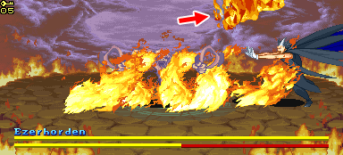
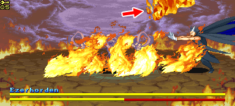
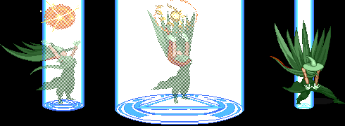
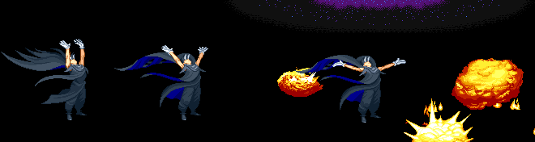

| 파이터 | | | 매직 유저 | | | 시프 | | | 클레릭 | | | 드워프 | | | 엘프 |
| 기본 정보 | | | 기본 조작 | | | 고급 조작 | | | 주문 | | | 콤보의 법칙 |
MAGIC USER
| 첫번째 서클의 주문 |
||||||
| 두번째 서클의 주문 |
||||||
※ 데미지는 1인 플레이를 기준으로 한다.
매직 미사일 (Magic Missile) - 1레벨 주문
적을 끝까지 쫓아가는 유도성질을 가진 마법 에너지 화살을 쏘는 주문으로 가장 기초적인 공격주문 중 하나다. 여기서는 양손으로 번갈아가며 하나씩 미사일을 발사한다. 원래는 목표물을 지정해서 시전하는 주문이지만 여기선 약간 무작위로 날아가서 적들이 많다면 원하는 적에게 맞추기가 좀 어려울 수 있다.
적이 무적 상태인 경우(예를 들면 쓰러졌다가 일어날 때) 근처를 선회하다가 무적 상태가 끝남과 동시에 추적 후 명중되며 만약 일정시간 동안 명중되지 않으면 그냥 화면 밖으로 사라질 수도 있다. 또한 화면상의 적들이 전부 쓰러져 있는 상태에서 시전을 했다면 목표를 잃고 화면 밖으로 사라진다.
레벨에 따라 발사되는 미사일 갯수가 증가하는데 만약 화면안에 매직 마시일이 5발이 있다면 그후로 시전하는 매직 미사일은 발사가 안되고 전부 사라진다. 또한 프로스트 샐러맨더를 만나자 마자 시전하거나 스테이지 10-4(배틀로얄) 후반부의 숨겨진 방 중 중간(가고일 나오는 곳)방에서는 가고일이 깨어날 때 시전하면 처음 발사되는 매직 미사일이 사라진다.
매직 미사일을 맞은 후 공중에 뜬 적에게 다른 공격을 넣어줄 수 있다. 하피 스테이지에서 와이번에 탄 셰도우 엘프를 격추 시킬 수 있는 유일한 주문이기도 하다.
| 평균 데미지 (약간 랜덤성이 있다) | |||
| 레벨 | 14 | 15~19 | 20~21 |
| 일반 몬스터 | 18 | 20 | 24 |
| 보스 | 14 | 12 | 10 |
| 미사일의 갯수 | 3 | 4 | 5 |
적을 끝까지 쫓아가는 유도성질을 가진 마법 에너지 화살을 쏘는 주문으로 가장 기초적인 공격주문 중 하나다. 여기서는 양손으로 번갈아가며 하나씩 미사일을 발사한다. 원래는 목표물을 지정해서 시전하는 주문이지만 여기선 약간 무작위로 날아가서 적들이 많다면 원하는 적에게 맞추기가 좀 어려울 수 있다.
적이 무적 상태인 경우(예를 들면 쓰러졌다가 일어날 때) 근처를 선회하다가 무적 상태가 끝남과 동시에 추적 후 명중되며 만약 일정시간 동안 명중되지 않으면 그냥 화면 밖으로 사라질 수도 있다. 또한 화면상의 적들이 전부 쓰러져 있는 상태에서 시전을 했다면 목표를 잃고 화면 밖으로 사라진다.
레벨에 따라 발사되는 미사일 갯수가 증가하는데 만약 화면안에 매직 마시일이 5발이 있다면 그후로 시전하는 매직 미사일은 발사가 안되고 전부 사라진다. 또한 프로스트 샐러맨더를 만나자 마자 시전하거나 스테이지 10-4(배틀로얄) 후반부의 숨겨진 방 중 중간(가고일 나오는 곳)방에서는 가고일이 깨어날 때 시전하면 처음 발사되는 매직 미사일이 사라진다.
매직 미사일을 맞은 후 공중에 뜬 적에게 다른 공격을 넣어줄 수 있다. 하피 스테이지에서 와이번에 탄 셰도우 엘프를 격추 시킬 수 있는 유일한 주문이기도 하다.
라이트닝볼트, 파이어볼들과 마찬가지로 동시에 맞는 적이 많을수록 그 데미지는 현저하게 증가된다. 그러나 범위 마법도 아니고 단발로 나가기때문에 1발이 동시에 적을 때리긴 어렵다. 특정지역에 같은 크기의 적을 겹쳐놓고 모인상태에서 날리면 효과를 볼수 있다. (증가배율은 다른 마법과 동일)
이것에 관련된 영상은 FAQ에 기재되어있다.
이것에 관련된 영상은 FAQ에 기재되어있다.
| 데미지 | 일반 몬스터 : 20~25 | 보스 몬스터 : 16~20 |
머리 위에서 시작해서 바닥을 향해 던지며 바닥에 닿는 즉시 폭발한다. 날아가는 도중에 파이어 볼에 닿거나 폭발범위 안에 서 있으면 데미지를 입는다. 적에게 연속해서 명중시킬 수 없으며(적이 파이어볼을 맞고 쓰러졌으면 다시 일어나기 전까지는 맞지 않는다) 적이 무적판정인 상태일 때에도(예를 들면 쓰러졌다가 일어날 때) 명중되지 않는다.
원래는 라이트닝 볼트와 데미지가 같은 주문이지만 여기 SOM에는 데미지가 더 낮으며 또 레벨이 올라가도 데미지가 그대로다. 같은 3레벨 주문이라서 사용빈도가 상당히 낮아진 주문이다. (전작 TOD에선 2히트가 되서 데미지가 강했었다.) 대신 시전속도가 빨라서 가끔 고블린 무리들을 처리할 땐 쓸만하다.
불의 속성에 대해 면역성이 있는 헬하운드/플레임 샐러맨더에게는 데미지를 줄 수 없다. 또한 리치의 경우 3레벨 이하의 주문에 대해 면역성이 있어서 마찬가지로 데미지를 줄 수 없다.
피해를 입은 적이 폭발의 중심지에서 멀수록 기본 데미지 보다 더 많은 데미지를 입는다. 또한 데미지를 증가시키는 장비(예를 들면 이어링같은)를 하나 이상 착용했을 경우 범위 안에 적들의 수가 많을 수록 데미지 증가폭이 높아진다. 폭발 전의 파이어 볼에 맞은 적은 기본 데미지만 입는다.
라이트닝 볼트 (Lightning Bolt) - 3레벨 주문
번개 줄기를 소환하는 주문이다. 전작 TOD와는 달리 위 아래로 방향 조절이 가능하다. 공중에 뜬 적들의 경우 고도에 따라 맞지 않을 수도 있다. 또한 적이 무적판정인 상태일 때에도(예를 들면 쓰러졌다가 일어날 때) 명중되지 않는다.
파이어 볼 보다 데미지가 높은데다가 레드 드래곤/Synn에게 크리티컬 데미지를 입힐 수 있어서 훨씬 유용하다.
시전자의 레벨이 21레벨이 되면 번개 줄기가 평소보다 굻어진다.
| 평균 데미지 (약간 랜덤성이 있다) | |||
| 레벨 | 14 | 15~19 | 20~21 |
| 일반 몬스터 | 34 | 40 | 46 |
| 보스 | 30 | 36 | 40 |
번개 줄기를 소환하는 주문이다. 전작 TOD와는 달리 위 아래로 방향 조절이 가능하다. 공중에 뜬 적들의 경우 고도에 따라 맞지 않을 수도 있다. 또한 적이 무적판정인 상태일 때에도(예를 들면 쓰러졌다가 일어날 때) 명중되지 않는다.
파이어 볼 보다 데미지가 높은데다가 레드 드래곤/Synn에게 크리티컬 데미지를 입힐 수 있어서 훨씬 유용하다.
시전자의 레벨이 21레벨이 되면 번개 줄기가 평소보다 굻어진다.
데미지를 증가시키는 장비(예를 들면 이어링같은)를 하나 이상 착용했을 경우 한번 시전으로 둘 이상 명중했다면 나중에 맞는 적일수록 더 많은 데미지를 입는다. (물론 데미지 버그는 여전히 적용된다.) 최종 목표물을 일직선상에서 맞추는 것보다 먼저 다른 적들을 맞추고 방향 전환을 하면서 가장 나중에 목표물을 맞추는게 데미지를 증가시키기에 좀 더 쉽다.
처음에 워저드리 스태프 + 이어링 + 라이트닝 로드를 착용하고 에저호든을 혼자 맞추면 이정도지만
먼저 스켈레톤 둘을 맞추고
마지막에 에저호든을 맞추면 이정도로 데미지가 증가한다.
아래표는 가장 나중에 맞는 적의 레벨별 평균 데미지 증가율이다. 실제 데미지에 곱하면 된다.
숫자가 두개로 나뉘어 있는 경우는 앞의 숫자는 15~19레벨, 뒤의 숫자는 20~21레벨의 경우다.
처음에 워저드리 스태프 + 이어링 + 라이트닝 로드를 착용하고 에저호든을 혼자 맞추면 이정도지만
먼저 스켈레톤 둘을 맞추고
마지막에 에저호든을 맞추면 이정도로 데미지가 증가한다.
숫자가 두개로 나뉘어 있는 경우는 앞의 숫자는 15~19레벨, 뒤의 숫자는 20~21레벨의 경우다.
| 적의 숫자 | 0 | 1 | 2 | 3 | 4 |
| 라이트닝 로드 | x1.12 | x1.25 | x1.37 | x1.50 | x1.87 |
| 이어링 | x1.25 | x1.57 | x1.92 | x2.40 | x3.00 |
| 이어링 + 라이트닝 로드 | x1.37 | x1.82 | x2.42 | x3.15 | x4.02 |
| 마력의 스태프 | x1.25 | x1.57 | x1.92 | x2.40 | x3.00 |
| 마력의 스태프 + 라이트닝 로드 | x1.37 | x1.82 | x2.42 | x3.15 | x4.02 |
| 마력의 스태프 + 이어링 | x1.50 | x2.15 | x3.37 | x4.95 | x0.35/x1.20 |
| 마력의 스태프 + 라이트닝 로드 + 이어링 | x1.62 | x2.55 | x3.92 | x5.97 | x2.08/x2.72 |
| 위저드리 스태프 | x1.50 | x2.15 | x3.37 | x4.95 | x0.44/x1.17 |
| 위저드리 스태프 + 라이트닝 로드 | x1.62 | x2.55 | x3.92 | x5.97 | x2.25/x2.72 |
| 위저드리 스태프 + 이어링 | x1.75 | x3.05 | x5.30 | x2.14/x2.87 | x3.70/x5.07 |
| 위저드리 스태프 + 라이트닝 로드 + 이어링 | x1.86 | x3.37 | x6.00 | x3.81/x4.25 | x6.78/x1.10 |
| 데미지 | |||
| 레벨 | 14 | 15~19 | 20~21 |
| 일반 몬스터 | 30 | 36 | 44 |
| 보스 | 30 | 36 | 40 |
화면상의 모든 적들에게 그 어느 때라도 바로 데미지를 입힐 수 있기 때문에 공중에 뜬 적을 떨어뜨리거나 고블린들을 정리한다거나 적을 쓰러뜨리는 용도로 사용한다거나 다용도로 사용할 수 있다.
또한 아이스 스톰을 맞은 적들이 완전히 쓰러지기 전에 다른 공격을 넣어줄 수 있어서 콤보에 활용할 수도 있다.
냉기의 속성에 대해 면역성이 있는 프로스트 샐러맨더에게는 데미지를 줄 수 없다.
반면 플레임 샐러맨더에게는 50% 증가된 데미지를 입힌다.
월 오브 파이어 (Wall of Fire) - 4레벨 주문
원래는 원하는 지역에 불의 장벽을 만들고 한쪽 면으로 불꽃 파동을 날릴 수 있는 방어적인 성격의 주문이지만 여기에서는 한방향으로 불길을 날리는 공격적인 주문으로 나온다. 발사전에 오른쪽을 보고 있다면 방향키/레버를 시계반대 방향으로, 왼쪽을 보고 있다면 시계방향으로 돌리면 불길도 그에 따라 한바퀴돈다.
어떤 상황에서도 화면안의 모든 적에게 데미지를 줄 수 있는 아이스 스톰과 비교하면 판정면에서 불리해서 상대적으로 덜 쓰이는 편이지만 쓰기에 따라서 상당히 유용할 수도 있다. 콜드 로드(rod of cold)보다는 파이어 로드(rod of fire ball)가 훨씬 많이 쓰이고 라이트닝 볼트처럼 적들을 연속해서 맞추면 데미지가 올라가기 때문에 데미지 면에서 더 유용하기 때문이다.
또한 아이스 스톰처럼 적들이 완전히 쓰러지기 전에 다른 공격을 넣어줄 수 있어서 콤보에 활용할 수도 있다.
리치와 불의 속성에 대해 면역성이 있는 헬 하운드/플레임 샐러맨더에게는 데미지를 줄 수 없다. 공중에 떠 있어서 고도가 높은 적들 또한 맞출 수 없다.
| 데미지 (약간 랜덤성이 있다) | |||
| 레벨 | 14 | 15~19 | 20~21 |
| 일반 몬스터 | 30 | 40 | 49 |
| 보스 | 30 | 38 | 45 |
어떤 상황에서도 화면안의 모든 적에게 데미지를 줄 수 있는 아이스 스톰과 비교하면 판정면에서 불리해서 상대적으로 덜 쓰이는 편이지만 쓰기에 따라서 상당히 유용할 수도 있다. 콜드 로드(rod of cold)보다는 파이어 로드(rod of fire ball)가 훨씬 많이 쓰이고 라이트닝 볼트처럼 적들을 연속해서 맞추면 데미지가 올라가기 때문에 데미지 면에서 더 유용하기 때문이다.
또한 아이스 스톰처럼 적들이 완전히 쓰러지기 전에 다른 공격을 넣어줄 수 있어서 콤보에 활용할 수도 있다.
리치와 불의 속성에 대해 면역성이 있는 헬 하운드/플레임 샐러맨더에게는 데미지를 줄 수 없다. 공중에 떠 있어서 고도가 높은 적들 또한 맞출 수 없다.
데미지를 증가시키는 장비(예를 들면 이어링같은)를 하나 이상 착용했을 경우 한번 시전으로 둘 이상 명중했다면 나중에 맞는 적일수록 더 많은 데미지를 입는다. (물론 데미지 버그는 여전히 적용된다.) 레베를 돌려서 불꽃이 회전하는 도중에 맞은 적은 여기에 포함이 되지 않는다.
처음에 워저드리 스태프 + 이어링 + 파이어 로드를 착용하고 에저호든을 혼자 맞추면 이정도지만

먼저 스켈레톤 둘을 맞추고 마지막에 에저호든을 맞추면 이정도로 데미지가 증가한다.
아래표는 가장 나중에 맞는 적의 레벨별 평균 데미지 증가율이다. 실제 데미지에 곱하면 된다.
숫자가 두개로 나뉘어 있는 경우는 앞의 숫자는 15~19레벨, 뒤의 숫자는 20~21레벨의 경우다.
처음에 워저드리 스태프 + 이어링 + 파이어 로드를 착용하고 에저호든을 혼자 맞추면 이정도지만

먼저 스켈레톤 둘을 맞추고 마지막에 에저호든을 맞추면 이정도로 데미지가 증가한다.
숫자가 두개로 나뉘어 있는 경우는 앞의 숫자는 15~19레벨, 뒤의 숫자는 20~21레벨의 경우다.
| 적의 숫자 | 0 | 1 | 2 | 3 | 4 |
| 파이어 로드 | x1.12 | x1.25 | x1.37 | x1.50 | x1.87 |
| 이어링 | x1.25 | x1.57 | x1.92 | x2.40 | x3.00 |
| 이어링 + 파이어 로드 | x1.37 | x1.82 | x2.42 | x3.15 | x4.02 |
| 마력의 스태프 | x1.25 | x1.57 | x1.92 | x2.40 | x3.00 |
| 마력의 스태프 + 파이어 로드 | x1.37 | x1.82 | x2.42 | x3.15 | x4.02 |
| 마력의 스태프 + 이어링 | x1.50 | x2.15 | x3.37 | x4.95 | x0.35/x1.20 |
| 마력의 스태프 + 파이어 로드 + 이어링 | x1.62 | x2.55 | x3.92 | x5.97 | x2.08/x2.72 |
| 위저드리 스태프 | x1.50 | x2.15 | x3.37 | x4.95 | x0.44/x1.17 |
| 위저드리 스태프 + 파이어 로드 | x1.62 | x2.55 | x3.92 | x5.97 | x2.25/x2.72 |
| 위저드리 스태프 + 이어링 | x1.75 | x3.05 | x5.30 | x2.14/x2.87 | x3.70/x5.07 |
| 위저드리 스태프 + 파이어 로드 + 이어링 | x1.86 | x3.37 | x6.00 | x3.81/x4.25 | x6.78/x1.10 |
| 데미지 | |||
| 레벨 | 14 | 15~19 | 20~21 |
| 일반 몬스터 | 즉사 | 즉사 | 즉사 |
| 보스 | 28 | 38 | 48 |
스켈레톤/구울/가고일을 제외한 모든 일반 몬스터는 말 그대로 즉사하며 가고일과 보스 몬스터의 경우 즉사하지 않고 일정량의 데미지를 입는다. 보스 몬스터중에서 워 머신/그린드래곤/리치/샐러맨더/에저호든에게는 데미지를 입힐 수 없다.
화면상의 모든 적들에게 그 어느 때라도 바로 효과를 주며 일반 몬스터를 즉사시키는 성능 때문에 스피드 런에서 효과가 탁월하다. 컨주어 엘리멘탈보다 활용도가 높다고 할 수 있다.
아이스 스톰처럼 적들이 쓰러지기 전에 다른 공격을 넣을 수 있다 (죽지 않은 적들에 한해서).
다른 주문과 달리 시전 즉시 화면 정중앙으로 이동해서 안개를 분출하는데 그 특유의 모션과 효과 때문에 '방구'라고 불리기도 하고 2p 매직 유저는 '방구법사'라 불리기도 한다.
컨주어 엘리멘탈 (Conjure Elemental) - 5레벨 주문
1p 매직 유저의 전용 주문으로 정령을 불러내서 공격을 한다. 원래는 정령에게 여러가지 일을 시키는 주문이다.
매직 유저가 바라보고 있는 방향에 따라 다른 정령을 불러내는데 왼쪽을 보고 시전할 경우 불의 정령을 소환하며 오른쪽으로 보고 시전할 경우 물의 정령을 소환한다.
아이스 스톰과 마찬가지로 화면상의 모든 적들에게 그 어느 때라도 바로 데미지를 입힐 수 있어서 아이스 스톰과 비슷한 용도로 쓸 수 있다. 다만 아이스 스톰처럼 적이 쓰러지기 전에 다른 공격을 넣을 수는 없다.
불의 정령은 불에 면역성이 있는 헬하운드/플레임 샐러맨더에게 데미지를 줄 수 없지만 대신 프로스트 샐러맨더에게 50% 증가된 데미지를 입힌다. 물의 정령은 냉기에 면역성이 있는 프로스트 샐러맨더에게 데미지를 줄 수 없다.
| 데미지 | |||
| 레벨 | 14 | 15~19 | 20~21 |
| 일반 몬스터 | 32 | 38 | 46 |
| 보스 | 32 | 36 | 44 |
매직 유저가 바라보고 있는 방향에 따라 다른 정령을 불러내는데 왼쪽을 보고 시전할 경우 불의 정령을 소환하며 오른쪽으로 보고 시전할 경우 물의 정령을 소환한다.
아이스 스톰과 마찬가지로 화면상의 모든 적들에게 그 어느 때라도 바로 데미지를 입힐 수 있어서 아이스 스톰과 비슷한 용도로 쓸 수 있다. 다만 아이스 스톰처럼 적이 쓰러지기 전에 다른 공격을 넣을 수는 없다.
불의 정령은 불에 면역성이 있는 헬하운드/플레임 샐러맨더에게 데미지를 줄 수 없지만 대신 프로스트 샐러맨더에게 50% 증가된 데미지를 입힌다. 물의 정령은 냉기에 면역성이 있는 프로스트 샐러맨더에게 데미지를 줄 수 없다.
플레쉬 투 스톤 (Flesh to Stone) - 6레벨 주문
석화 광선을 발사해서 적들을 돌로 만들어 버리는 주문이다. 돌이 된 적들은 바로 사라진다. 가고일의 경우 돌이 되지는 않지만 바로 즉사한다. 보스 몬스터의 경우 다른 공격주문 처럼 데미지를 입는다.
적들을 바로 없앨 수 있고 시전 시간도 빨라서 게임을 빠르게 진행 할 때 많은 도움이 되지만 대신 이렇게 돌이 된 적들은 아이템을 전혀 떨어뜨리지 않는다는 단점이 있다. 가고일의 경우 예외로 아이템을 떨어뜨린다. 시전자의 손 바로 앞에서부터 판정이 생기는게 아니라 직선의 빔이 시작되는 부분부터 판정이 생기니 너무 가까이서 시전해서 빗나가는 일이 없도록 하자.
적이 무적판정인 상태일 때는(예를 들면 쓰러졌다가 일어날 때) 명중되지 않는다. 또한 나그파를 제외하면 쓰러진 적에게도 맞출 수 없다.
워 머신/리치/에저호든 에게는 데미지를 입힐 수 없다. 보통은 보스 몬스터에게 데미지를 입히면 바로 쓰러지지만 나그파의 경우 예외로 쓰러지기 전에 다른 공격을 넣을 수 있다.
| 데미지 | |||
| 레벨 | 14 | 15~19 | 20~21 |
| 일반 몬스터 | 즉사 | 즉사 | 즉사 |
| 보스 | 28 | 32 | 38 |
적들을 바로 없앨 수 있고 시전 시간도 빨라서 게임을 빠르게 진행 할 때 많은 도움이 되지만 대신 이렇게 돌이 된 적들은 아이템을 전혀 떨어뜨리지 않는다는 단점이 있다. 가고일의 경우 예외로 아이템을 떨어뜨린다. 시전자의 손 바로 앞에서부터 판정이 생기는게 아니라 직선의 빔이 시작되는 부분부터 판정이 생기니 너무 가까이서 시전해서 빗나가는 일이 없도록 하자.
적이 무적판정인 상태일 때는(예를 들면 쓰러졌다가 일어날 때) 명중되지 않는다. 또한 나그파를 제외하면 쓰러진 적에게도 맞출 수 없다.
워 머신/리치/에저호든 에게는 데미지를 입힐 수 없다. 보통은 보스 몬스터에게 데미지를 입히면 바로 쓰러지지만 나그파의 경우 예외로 쓰러지기 전에 다른 공격을 넣을 수 있다.
데미지를 증가시키는 장비(예를 들면 이어링같은)를 하나 이상 착용했을 경우 한번 시전으로 둘 이상 명중했다면 나중에 맞는 적일수록 더 많은 데미지를 입는다. (물론 데미지 버그는 여전히 적용된다.)
워저드리 스태프 + 이어링을 착용하고
다크 워리어2를 혼자 맞추면 이정도의 데미지가 나오지만
스켈레톤 둘을 먼저 맞추고 다크 워리어2를 맞추면
이정도의 데미지가 나온다.
아래표는 가장 나중에 맞는 적의 레벨별 평균 데미지 증가율이다. 실제 데미지에 곱하면 된다.
숫자가 두개로 나뉘어 있는 경우는 앞의 숫자는 15~19레벨, 뒤의 숫자는 20~21레벨의 경우다.
워저드리 스태프 + 이어링을 착용하고
다크 워리어2를 혼자 맞추면 이정도의 데미지가 나오지만
스켈레톤 둘을 먼저 맞추고 다크 워리어2를 맞추면
이정도의 데미지가 나온다.
숫자가 두개로 나뉘어 있는 경우는 앞의 숫자는 15~19레벨, 뒤의 숫자는 20~21레벨의 경우다.
| 적의 숫자 | 0 | 1 | 2 | 3 | 4 |
| 이어링 | x1.25 | x1.57 | x1.92 | x2.40 | x3.00 |
| 마력의 스태프 | x1.25 | x1.57 | x1.92 | x2.40 | x3.00 |
| 마력의 스태프 + 이어링 | x1.50 | x2.15 | x3.37 | x4.95 | x0.44/x1.17 |
| 위저드리 스태프 | x1.50 | x2.15 | x3.37 | x4.95 | x0.44/x1.17 |
| 위저드리 스태프 + 이어링 | x1.75 | x3.05 | x5.30 | x2.14/x2.87 | x3.70/x5.07 |
프로젝티드 이미지 (Projected image) - 6레벨 주문
원래는 시전자와 똑같은 모습의 허상의 이미지를 만들어내며 그 이미지는 시전자의 행동과 말을 똑같이 따라하는 주문이지만 여기서는 시전자를 일정시간동안 무적으로 만들어 준다.
지속시간 동안은 레드 드래곤이나 synn의 브레스를 제외한 모든 공격으로 부터 피해를 입지 않는다.
또한 주문이 시전된후 공격을 하면, 공격타수 만큼 시간을 보상받는다, 즉 때리는 찰나는 지속시간이 포함되지 않아 쌓이고 쌓이면 수초를 더 쓸수 있게 된다.
| 레벨 | 14 | 15~19 | 20~21 |
| 지속시간 | 8초 | 9초 | 10초 |
지속시간 동안은 레드 드래곤이나 synn의 브레스를 제외한 모든 공격으로 부터 피해를 입지 않는다.
또한 주문이 시전된후 공격을 하면, 공격타수 만큼 시간을 보상받는다, 즉 때리는 찰나는 지속시간이 포함되지 않아 쌓이고 쌓이면 수초를 더 쓸수 있게 된다.
리버스 그래비티 (Reverse Gravity) - 7레벨 주문
15레벨이 되면 사용가능해 지는 주문이다.
중력을 반대로 뒤집어서 범위안의 모든 물체를 공중으로 떨어뜨리는 주문인데 여기서는 범위안의 적들을 띄웠다가 바닥으로 떨어뜨리면서 데미지를 입힌다. 원래는 날 수 있는 적들에게는 데미지를 입히지 못하지만 여기서는 딱히 그런 제한은 없다.
적이 무적판정인 상태일 때는 (예를 들면 쓰러졌다가 일어날 때) 명중되지 않는다.
리치/그린 드래곤/블랙 드래곤/레드 드래곤/에저호든 에게는 데미지를 입힐 수 없다.
이어링(earring), 위저드리 스태프(staff of wizardry) 착용시 유난히 데미지 증가율이 높다.
이어링 착용시 50%증가 (원래는 25%), 이어링과 워저드리 스태프 동시 착용시 124%증가 (원래는 75%).
위저드리 스태프만 착용했을 경우는 차이가 없다.

| 데미지 | ||
| 레벨 | 15~19 | 20~21 |
| 일반 몬스터 | 40 | 50 |
| 보스 | 36 | 46 |
중력을 반대로 뒤집어서 범위안의 모든 물체를 공중으로 떨어뜨리는 주문인데 여기서는 범위안의 적들을 띄웠다가 바닥으로 떨어뜨리면서 데미지를 입힌다. 원래는 날 수 있는 적들에게는 데미지를 입히지 못하지만 여기서는 딱히 그런 제한은 없다.
적이 무적판정인 상태일 때는 (예를 들면 쓰러졌다가 일어날 때) 명중되지 않는다.
리치/그린 드래곤/블랙 드래곤/레드 드래곤/에저호든 에게는 데미지를 입힐 수 없다.
이어링(earring), 위저드리 스태프(staff of wizardry) 착용시 유난히 데미지 증가율이 높다.
이어링 착용시 50%증가 (원래는 25%), 이어링과 워저드리 스태프 동시 착용시 124%증가 (원래는 75%).
위저드리 스태프만 착용했을 경우는 차이가 없다.
메테오 스웜 (Meteor Swarm) - 9레벨 주문

데미지 - 일반 몬스터, 보스 몬스터에 상관없이 160
20레벨이 되면 사용가능해 지는 1p 매직 유저의 전용 주문이다.
총 12개의 유성 무리를 소환하는 주문으로 유성 무리는 낙하해서 폭발을 한다.
9레벨 주문답게 데미지가 상당히 강력하며 불의 속성을 지닌 것 처럼 보이지만 헬 하운드에게도 데미지를 입힌다.
범위는 넓어 보이지만 생각보다 잘 명중이 되지 않는 경우가 꽤 많다. 또한 적이 무적판정인 상태일 때는 (예를 들면 쓰러졌다가 일어날 때) 명중되지 않는다.
파이어 볼 처럼 폭발범위안에 여러명의 적이 있을 수록 많은 데미지를 입으며 폭발범위의 가장자리에 있을 수록 그 증가폭이 커진다. 하지만 기본 데미지가 워낙 커서 그에 비하면 증가량이 그리 크지는 않다.
기본 데미지가 워낙에 커서 데미지를 올려주는 장비들을 동시에 착용하면 오히려 기본 데미지보다 더 낮은 데미지가 나오는 데미지 증가 버그 현상을 쉽게 볼 수 있다.
위저드리 스태프 착용시 → 241 (51%증가)
위저드리 스태프 + 파이어 로드 착용시 → 245 (53%증가)
위저드리 스태프 + 이어링 착용시 → 25 (84.4%감소)
위저드리 스태프 + 이어링 + 파이어 로드 착용시 → 56 (65%감소)
마력의 스태프 + 이어링 + 파이어 로드 → 244 (53%증가)
따라서 메테오 스웜을 제대로 쓰려면 붉은색으로 표시한 장비 조합은 피해야 한다.
20레벨이 되면 사용가능해 지는 1p 매직 유저의 전용 주문이다.
총 12개의 유성 무리를 소환하는 주문으로 유성 무리는 낙하해서 폭발을 한다.
9레벨 주문답게 데미지가 상당히 강력하며 불의 속성을 지닌 것 처럼 보이지만 헬 하운드에게도 데미지를 입힌다.
범위는 넓어 보이지만 생각보다 잘 명중이 되지 않는 경우가 꽤 많다. 또한 적이 무적판정인 상태일 때는 (예를 들면 쓰러졌다가 일어날 때) 명중되지 않는다.
파이어 볼 처럼 폭발범위안에 여러명의 적이 있을 수록 많은 데미지를 입으며 폭발범위의 가장자리에 있을 수록 그 증가폭이 커진다. 하지만 기본 데미지가 워낙 커서 그에 비하면 증가량이 그리 크지는 않다.
기본 데미지가 워낙에 커서 데미지를 올려주는 장비들을 동시에 착용하면 오히려 기본 데미지보다 더 낮은 데미지가 나오는 데미지 증가 버그 현상을 쉽게 볼 수 있다.
위저드리 스태프 착용시 → 241 (51%증가)
위저드리 스태프 + 파이어 로드 착용시 → 245 (53%증가)
위저드리 스태프 + 이어링 착용시 → 25 (84.4%감소)
위저드리 스태프 + 이어링 + 파이어 로드 착용시 → 56 (65%감소)
마력의 스태프 + 이어링 + 파이어 로드 → 244 (53%증가)
따라서 메테오 스웜을 제대로 쓰려면 붉은색으로 표시한 장비 조합은 피해야 한다.
미티어 스웜 역시 마법장비를 장착했을때, 한발당 동시에 맞는, 또는 떨어지는 선상에 순차적으로라도 맞는 적이 여럿있다면 데미지가 증가하게 된다. 그러나 기본데미지(160)가 워낙 높기때문에 이어링 하나만 있더라도 3번째 적부터는 데미지가 역류하게 된다. 가장 이상적인것은 파이어로드만 끼고 있는것인데, 레벨20이상에서 매직유저가 파이어로드만 들고 있기는 어렵다.
| 기본 정보 | | | 기본 조작 | | | 고급 조작 | | | 주문 | | | 콤보의 법칙 |
| 파이터 | | | 매직 유저 | | | 시프 | | | 클레릭 | | | 드워프 | | | 엘프 |